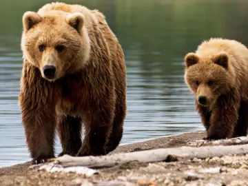

Bears
- Ollie
- Mona
Bears are carnivoran mammals of the family Ursidae They are classified as caniforms, or doglike carnivorans. Although only eight species of bears are extant, they are widespread, appearing in a wide variety of habitats throughout most of the Northern Hemisphere and partially in the Southern Hemisphere. Bears are found on the continents of North America, South America, and Eurasia. Common characteristics of modern bears include large bodies with stocky legs, long snouts, small rounded ears, shaggy hair, plantigrade paws with five nonretractile claws, and short tails.
Facts About BearsGiraffes

- Frankie
- Coconut
The giraffe is a large African hoofed mammal belonging to the genus Giraffa. It is the tallest living terrestrial animal and the largest ruminant on Earth. Traditionally, giraffes were thought to be one species, Giraffa camelopardalis, with nine subspecies. Most recently, researchers proposed dividing them into up to eight extant species due to new research into their mitochondrial and nuclear DNA, as well as morphological measurements. Seven other extinct species of Giraffa are known from the fossil record.
Facts About GiraffesLions

- Mella
- Karl
The lion (Panthera leo) is a large cat of the genus Panthera, native to Africa and India. It has a muscular, broad-chested body; a short, rounded head; round ears; and a hairy tuft at the end of its tail. It is sexually dimorphic; adult male lions are larger than females and have a prominent mane. It is a social species, forming groups called prides. A lion's pride consists of a few adult males, related females, and cubs. Groups of female lions usually hunt together, preying mostly on large ungulates. The lion is an apex and keystone predator; although some lions scavenge when opportunities occur and have been known to hunt humans, lions typically do not actively seek out and prey on humans.
Facts About LionsMonkeys
- Cookie
- Earl
- Banana Pudding
Monkey is a common name that may refer to most mammals of the infraorder Simiiformes, also known as the simians. Traditionally, all animals in the group now known as simians are counted as monkeys except the apes, thus monkeys (in that sense) constitute an incomplete paraphyletic grouping; however, in the broader sense based on cladistics, apes (Hominoidea) are also included, making the terms monkeys and simians synonyms in regard to their scope.
Facts About MonkeysAlligators

- Wren
- Aspen
- Mika
An alligator, or colloquially gator, is a large reptile in the Crocodilia order in the genus Alligator of the family Alligatoridae. The two extant species are the American alligator (A. mississippiensis) and the Chinese alligator (A. sinensis). Additionally, several extinct species of alligator are known from fossil remains. Alligators first appeared during the Oligocene epoch about 37 million years ago.[1]
Facts About Alligators